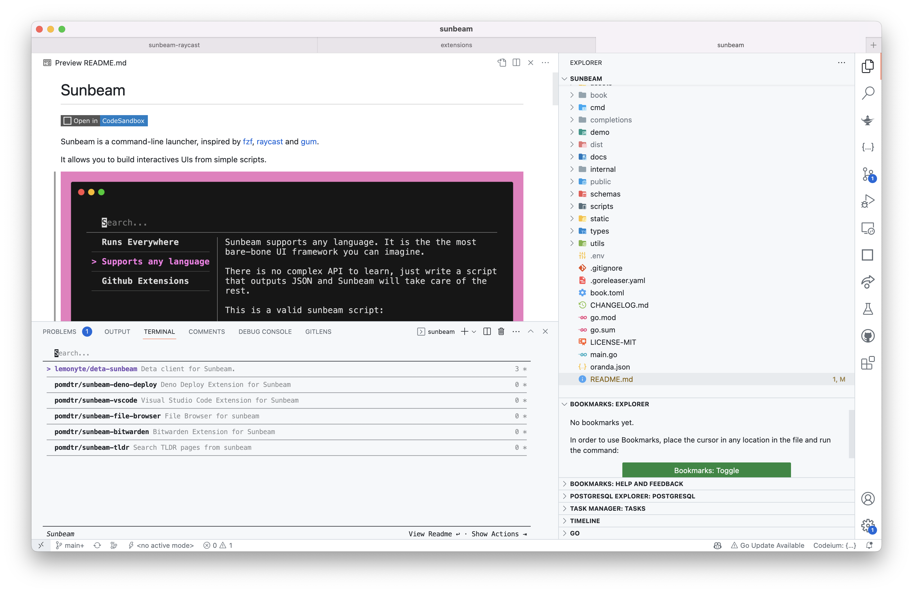

sunbeam
Sunbeam is a command-line launcher, inspired by fzf, raycast and gum.
It allows you to build interactives UIs from simple scripts.
Example Integrations:
Visit the documentation for more information (including installation instructions).
Why sunbeam?
I love TUIs, but I spent way to much time writing them.
I used a lot of application launchers, but all of them had some limitations.
Sunbeam try to address these limitations:
Sunbeam runs on all platforms
Sunbeam is distributed as a single binary, so you can run it on any platform. The sunbeam extension system is also designed to be cross-platform.
Sunbeam is language agnostic
Sunbeam communicates with your scripts using JSON, so you can use any language you want. The only requirement is that the script is executable and outputs a JSON object conforming to the Sunbeam JSON Schema on stdout.

Sunbeam is easy to extend
Instead of reiventing the wheel, sunbeam relies on your familiarity with git and github to make it easy to create, update, publish and install extensions.
Creating a new extension is as easy as creating a new folder and adding a sunbeam-extension executable to it. Sunbeam supports installing extension from any git host, including github.
If you want your extension to be discoverable, you can also add a sunbeam-extension topic to your github repository.
Since sunbeam uses git under the hood, you can create private extensions by using private git repositories.
Sunbeam supports custom clients
Sunbeam comes with a built-in TUI to interact with your scripts, but you can also use any other client.
Currently the only alternative client is sunbeam-raycast.
Inspirations / Alternatives
Sunbeam wouldn't exist without taking inspirations from incredible tools. Make sure to checkout:
- raycast: Sunbeam shamelessly copy most of raycast UX. Even the project name is a reference to raycast.
- fzf: Sunbeam tries to take inspiration from fzf, but it's not a drop-in replacement. Sunbeam is designed to be used as a launcher, not as a fuzzy finder.
- slapdash: The sunbeam event loop was inspired by slapdash. Sadly, slapdash doesn't seem to be updated anymore.
- gh: The sunbeam extension system was inspired by gh, with some modifications to make it more flexible.